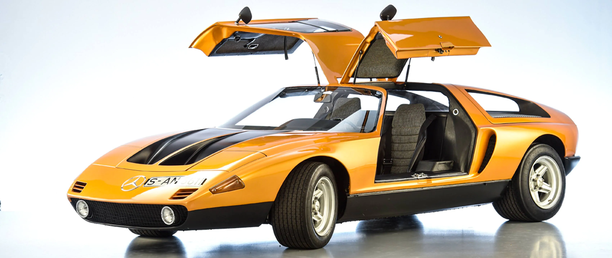

Mercedes Benz C111
1960s-1970s
The Mercedes-Benz C111 was a series of experimental automobiles produced by Mercedes-Benz in the 1960s and 1970s.
The company was experimenting with new engine technologies, including Wankel engines, diesel engines, and
turbochargers, and used the basic C111 platform as a testbed
